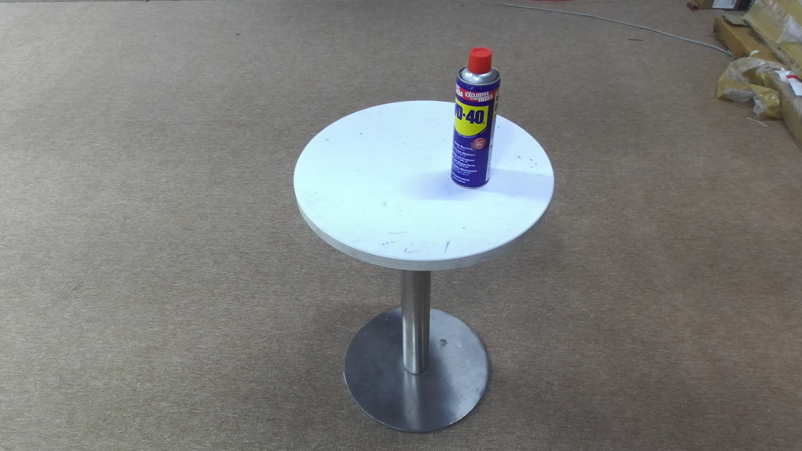
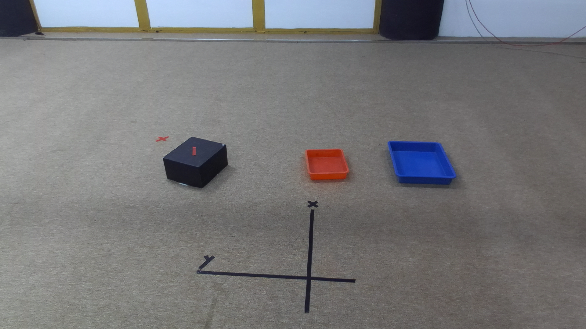
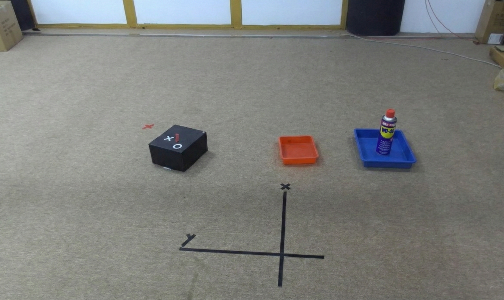

Precise object placement remains underexplored in aerial manipulation, where most systems rely on predefined target coordinates and focus primarily on grasping and control. Specifying exact placement poses, however, is cumbersome in real-world settings, where users naturally communicate goals through language. In this work, we present AeroPlace-Flow, a training-free framework for language-grounded aerial object placement that unifies visual foresight with explicit 3D geometric reasoning and object flow. Given RGB-D observations of the object and the placement scene, along with a natural language instruction, AeroPlace-Flow first synthesizes a task-complete goal image using image editing models. The imagined configuration is then grounded into metric 3D space through depth alignment and object-centric reasoning, enabling the inference of a collision-aware object flow that transports the grasped object to a language- and contact-consistent placement configuration. The resulting motion is executed via standard trajectory tracking for an aerial manipulator. AeroPlace-Flow produces executable placement targets without requiring predefined poses or task-specific training. We validate our approach through extensive simulation and real-world experiments, demonstrating reliable language-conditioned placement across diverse aerial scenarios with an average success rate of 75% on hardware.
Place the purple object on the left side of the table.
Object Image: I obj

Scene Image: I scene

Visual Foresight: I gen
